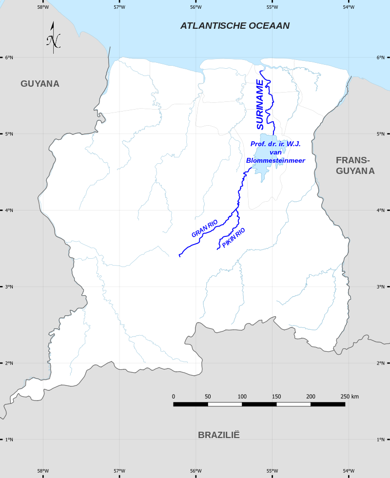
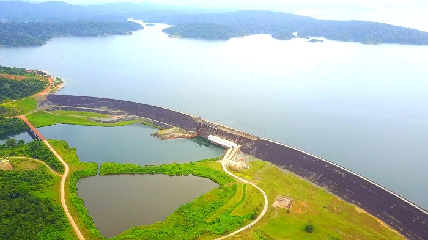

The Suriname River
Suriname river is the country’s most famous river and probably the best river for an all round tourist run through the country. Starting from the northern tip of Suriname the river flows out into the Atlantic Ocean and connects at this end to the Commewijne River meaning the two rivers cover a lot more ground. That and the Suriname river starts further south by a rather long stretch meaning it cuts into the heart of the country as well as houses the biggest lake in the country although officially it is a reservoir.
 A map view of the Suriname RiverThe Brokopondo Reservoir as it is referred to is a massive body of water that breaks the river into two halves. The northern half is home to cities like Nieuw Amsterdam, Paramaribo, and Lelydorp all of which are densely populated with Lelydorp being the second highest population and Paramaribo being the highest populated city in the Country. This river unfortunately is infested with Piranha but because this is the richest part of the country there are sections of the river with artificial beaches so people can safely swim in the water there.
 The Brokopondo ReservoirAs for southern Suriname past the Reservoir, beyond that point is the Sipaliwini District which is mostly claimed territory belonging to the Maroon and indigenous peoples of the area which makes up most of the country so unless you are trying to visit and study the indigenous people there and see super obscure sites in the mountains and jungle of Suriname then It is recommended this general area be avoided.